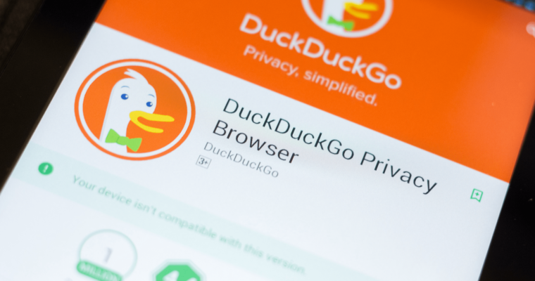

DuckDuckGo : le moteur de recherche qui protège vos données


DuckDuckGo est un moteur de recherche qui fait de la protection des données sa priorité. Découvrez tout ce que vous devrez savoir à son sujet : fonctionnalité, avantage et différence par rapport à Google, comment l’utiliser.
Au fil des dernières années, les pratiques douteuses des géants de la Tech en termes de collecte de données ont été révélées au grand jour. Les géants du web comme Facebook et Google vendent les données personnelles de leurs utilisateurs à des publicitaires, et n’hésitant pas à user de stratagème pernicieux pour moissonner toujours plus d’informations.
Dans ce contexte, partout dans le monde. De plus en plus d’internautes cherche des alternatives leurs permettant de continuer à utiliser leur confidentialité. C’est la raison pour laquelle le moteur de recherche DuckDuckGo rencontre un succès croissant.
DuckDuckGo qu’est-ce que c’est et à quoi ça sert ?
DuckDuckGo est un moteur de recherche lancé en 2008. Ses créateurs le définissent comme le moteur de recherche qui ne vous espionnent pas.
Comprenez par-là que ce web engine n’utilise pas de cookie pour suivre les utilisateurs, et ne collecte pas de donnée personnelle sur ceux qui l’utilisent. Même l’adresse IP des utilisateurs est dissimulée.
DuckDuckGo vs Google et les autres moteur de recherche : quelle différence ?
DuckDuckGo se distingue de Google et des autres moteurs de recherche par plusieurs points. Il stock pas l’adresse IP de ses utilisateurs, mais uniquement des informations liées aux mots clés. Ainsi, plutôt de filtrer les résultats et de les personnaliser en se basant sur l’historique des utilisateurs, comme le fait Google , DuckDuckGo présente délibérément les mêmes résultats à tous les internautes pour un même mot-clé. Les résultats sont donc moins pertinents mais la confidentialité est préservée. Ses données proviennent d’une compilation de plus de 400 sources dont Bing, Wolfram, Alpha, Wikipedia, Yahoo! Et son propre web crewler dénommé DuckDuckGoBot. Et en outre, ce moteur de recherche ne partage pas les données sur les mots clés des utilisateurs avec les sites web qu’ils visitent suite aux recherches effectuées.
Les cookies ne sont utilisés que lorsque cela est strictement nécessaire. En outre, DuckDuckGo affiche en priorité le site chiffré en HTTPS plutôt que leurs versions non chiffrées. Notons enfin que DuckDuckGo repose uniquement sur des technologies et des projets open source.
DuckDuckGo : quels sont les avantages ?
Compte tenu des spécificités énumérées ci-dessus, les avantages de DuckDuckGo pour les internautes sont multiples. Tout d’abord, ce moteur de recherche permet de préserver votre confidentialité puisqu’il n’y a pas d’historique de recherche enregistré. Même si la police exige des données de la part de DuckDuckGo, l’entreprise ne pourra rien leur fournir. Sachant que le site web que vous visitez avec ce moteur de recherche ne reçoivent pas d’informations sur les mots-clés qui vous ont conduit à eux, vous ne risquez pas non plus de voir vos termes de recherche dévoilé au grand jour. Par ailleurs, sachant que DuckDuckGo, est développé par une petite équipe de moins de 50 personnes, vous pouvez directement communiquez avec ses créateurs et leur soumettre vos retour et vos idées. Enfin, saluons les transparences de l’entreprise puisque tous les détails sur elle sont consultables sur le site officiel.
Quels sont les défauts de DuckDuckGo
Malheureusement, DuckDuckGo n’est pas exempt de défauts. Tout d’abord, ce moteur de recherche est nettement moins performant que Google . Cela n’a rien de surprenant, ses créateurs n’ont pas et n’auront jamais les mêmes ressources que le géant de Mountain View.
En outre, ce search Engine ne répresente qu’une infirme partie du marché. En 2017, DuckDuckGo se contentait de 0,22% de part de marché mondial derrière Ask, Yandex, ou même Baidu. Cependant, sa croissance se poursuit à vive allure d’année en année.
Le dernier point faible de DuckDuckGo est que la plupart de ses fonctionnalité s’inspirant de Google et cherchent à l’imiter. Ou, dans le cas de la confidentialité, à prendre son contrepied. De ce faite, ce moteur de recherche accusera un temps de retard sur Big Google en termes d’innovation.
Quels sont les défauts de DuckDuckGo
Malheureusement, DuckDuckGo n’est pas exempt de défauts. Tout d’abord, ce moteur de recherche est nettement moins performant que Google. Cela n’a rien de surprenant, ses créateurs n’ont pas et n’auront jamais les mêmes ressources que le géant de Mountain View. En outre, ce search Engine ne répresente qu’une infirme partie du marché. En 2017, DuckDuckGo se contentait de 0,22% de part de marché mondial derrière Ask, Yandex, ou même Baidu. Cependant, sa croissance se poursuit à vive allure d’année en année. Le dernier point faible de DuckDuckGo est que la plupart de ses fonctionnalité s’inspirant de Google et cherchent à l’imiter. Ou, dans le cas de la confidentialité, à prendre son contrepied. De ce faite, ce moteur de recherche accusera un temps de retard sur Big Google en termes d’innovation.
Comment utiliser DuckDuckGo ?
Pour l’heure, DuckDuckGO ne propose pas son propre navigateur comme Google avec Chrome ou Mozilla avec Firefox. La firme se contente de proposer une application et une extension pour navigateur .
Pour utiliser DuckDuckGo, il suffit donc d’ajouter à votre navigateur web par défaut. Une alternative consiste à utiliser le logiciel Tor pour naviguer sur internet, puisque DuckDuckGo est son moteur de recherche par défaut.
Google Chrome ajoute DuckDuckGo comme option de moteur de recherche.
Depuis le mois de mars 2019, avec la mise à jour Chromium 73, Google a ajouté plusieurs options de moteur de recherche pour son Chrome dans plus de 60 pays. Parmi ces nouvelles options, on compte DuckDuckGo.
Par ailleurs, les utilisateurs français peuvent aussi opter pour Qwant, l’alternative française à DuckDuckGo. Pour Google, il s’agit d’une de faire face aux nombreuses critiques émises à l’égard de Chrome concernant la confidentialité et la protection des données.
Il s’agit aussi de s’aligner avec les tendances et préférences des consommateurs, puisque les moteurs de recherche confidentiels rencontrent un succès croissant. Néanmoins, Qwant continue à recommander Mozilla Firefox ou Brave en guise de navigateur web.